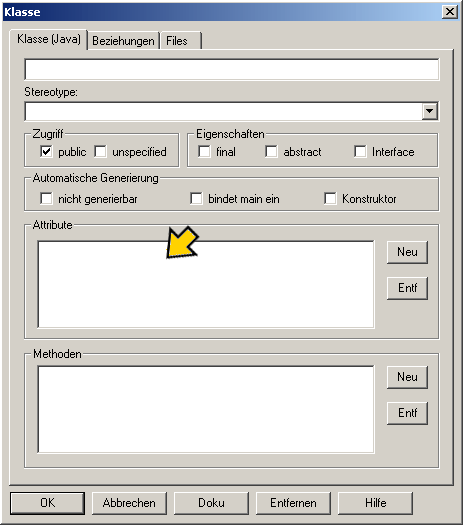

Eine zweite Klasse |
|
|
Als erstes klicken Sie auf den
Klasse-Button, danach ein Klick in das
UML-Fenster. Es erscheint der
Klasse-Dialog. Sie geben bitte beim Namen
"PipiLangstrumpf" an. |
|
Attribute erzeugen |
|
|  |
Die Klasse "PipiLangstrumpf" hat jetzt auch ein
Attribut. Um dieses zu erzeugen, klicken wir im Bereich
Attribute auf "Neu".Es erscheint der Attribut-Dialog.
Hier geben wir dem Attribut den Namen "geplapper".
Den Datentyp setzen wir auf "String" und als Attributwert geben wir "widewidewitt und drei macht
neune \n" an. Das "\n" bewirkt, dass wir nach der Ausgabe dieses Textes einen Zeilenumbruch bekommen. Den Zugriff setzen wir auf "public". Ihnen wird auffallen, dass es auch die Mölichkeit gibt Get- und Set-Methoden anzuhaken. Allerdings brauchen wir diese bei der Klasse "PipiLangstrumpf" nicht. Wichtig wird dieser Schritt erst, wenn wir ein Attribut "private" deklarieren, dann können wir nur noch über diese Get- und Set-Methoden auf das Attribut zugreifen. |
Methoden überschreiben |
|
|
Die Namen der Methoden heißen genauso wie in der
Klasse "Mädchen. Wir erstellen also eine Methode "reden" und eine Methode "zaehlen" genau wie bereits bei der Klasse "Mädchen". Jetzt brauchen wir noch eine "main" Methode, damit die Klasse ausführbar ist. Dazu klicken Sie einfach im Feld "Automatische Generierung" auf "bindet main ein". |
|